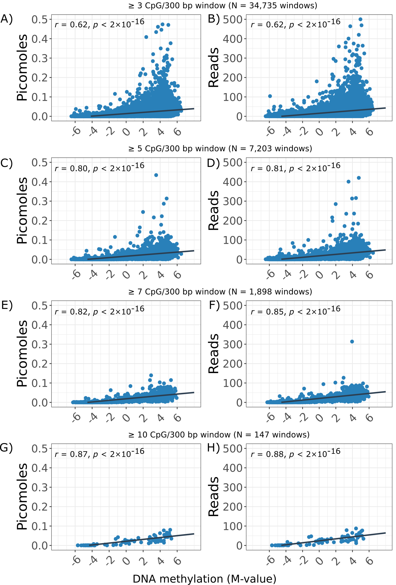
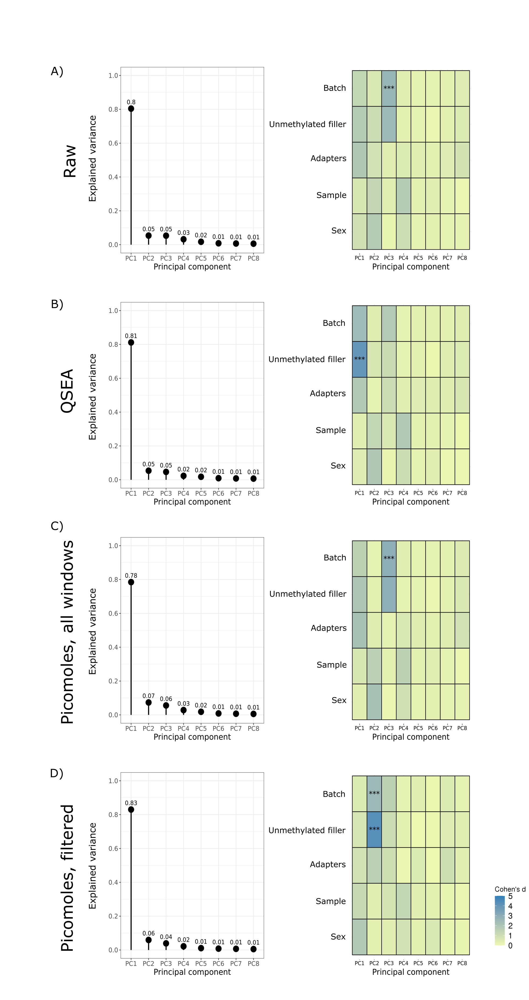

compress_directory.sh
This will compress a directory containing a large amount of files.
submit_compress_direct.sh is used to submit the script to a HPC cluster
ggplot2_theme_bw.R
This script contains my prefered setting for ggplot2 plots.
These parameters can be loaded into R by source(“ggplot2_theme_bw.R”).
correlation_spearman_plot.R
This script can be accessed within R by source(“correlation_spearman_plot.R”).
This function will generate a scatter plot and calculate the spearman correlation coefficient.
Output plots will look like this: 
Example of plot from correlation_spearman_plot.R. Plot is from "Sensitive and reproducible cell-free methylome quantification with synthetic spike-in controls" available on biorxiv.
heatscree_cohensd_plot.R
This function perfromed principal component analysis and correlates each principal component to known variables within the data.
This function produces two plots:
Scree plot showing the explained variance on the y-axis and each principal component on the x-axis.
Heatmap correlating each principal component to known variables in the data. The colours on the heat map correspond the a Cohen’s d coefficient, a stand effect size metric. The astricks denotes the statistical p-value.
The output plot looks like this: 
Example of plot from heatscree_cohensd_plot.R. Plot is from "Sensitive and reproducible cell-free methylome quantification with synthetic spike-in controls" available on biorxiv.